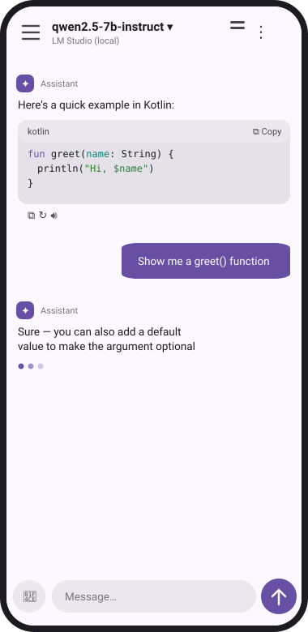
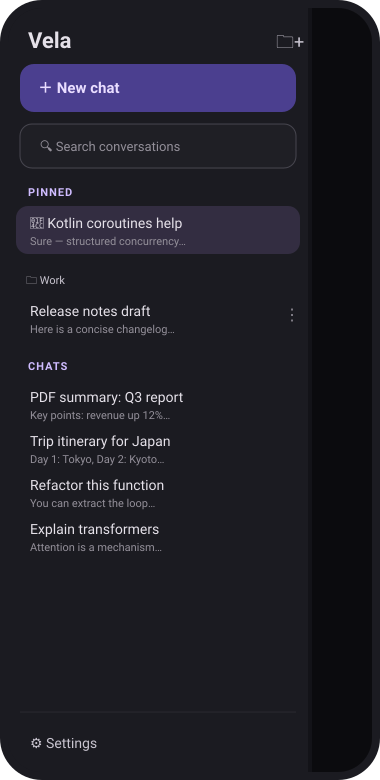
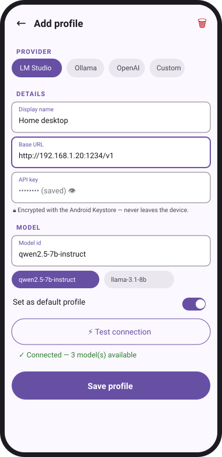

Local-first, cloud-optional
Talks natively to LM Studio and Ollama on your own network. OpenAI, OpenRouter, DeepSeek, Moonshot, Zhipu, Gemini and Qwen are there when you want them — never required.
Android · offline-first
Versatile Engine for Local AI
A chat client that answers to your own hardware first. Point it at LM Studio or Ollama on your LAN, reach any OpenAI-compatible cloud provider when you want to, or talk to remote autonomous agents over your own Tailscale mesh — every key stays on the device, encrypted, never in a cloud backup.
01 — Why
Talks natively to LM Studio and Ollama on your own network. OpenAI, OpenRouter, DeepSeek, Moonshot, Zhipu, Gemini and Qwen are there when you want them — never required.
Discover and message remote autonomous agents over your own Tailscale mesh. Peer tables give one profile several gateway identities; agent "arms" let a regular chat model call a remote agent as a tool and relay the answer in-persona.
API keys and A2A tokens live in the Android Keystore via EncryptedSharedPreferences, hardware-backed where available — excluded from cloud auto-backup entirely, on-disk or off.
Every conversation, profile and key, every A2A token, every persona and prompt, your app-lock PIN — one AES-256-GCM export behind a passphrase that's never stored. Lose the passphrase, lose the backup; that's the whole point.
Nord, Dracula, Catppuccin, Gruvbox, Tokyo Night, Rosé Pine, One Dark, Monokai and more, plus Material You dynamic color and true-black AMOLED — each a faithful recreation, not a filter.
Speech-to-text and read-aloud, image attachments for vision models, PDFs extracted and inlined on-device — plus eight agent personas to talk to before you've written a single system prompt.
02 — Compatibility
Eleven provider presets over the OpenAI-compatible chat dialect, plus a native Agent2Agent client for autonomous agents. Point it anywhere; the request pipeline doesn't change underneath you.
03 — Charted



04 — Get it
Not on the Play Store — this is a personal-infrastructure app, distributed as a signed release APK from GitHub. minSdk 26, targetSdk 35. Debug and release install as two separate apps, so trying it never touches an existing install.
# clone and build
git clone https://github.com/Maximus23451/vela-chat.git
cd vela-chat
./gradlew :app:assembleRelease --no-configuration-cache
# JDK 17 required — see scripts/provision-build-env.sh